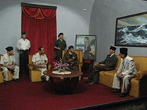
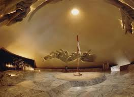
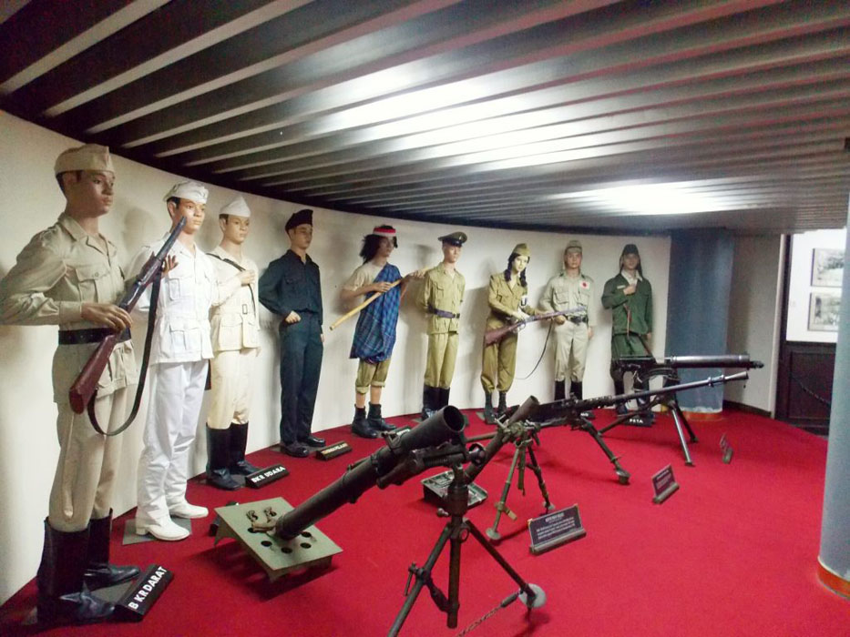
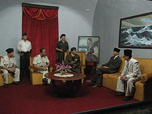
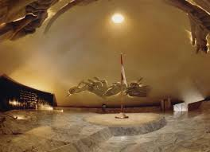
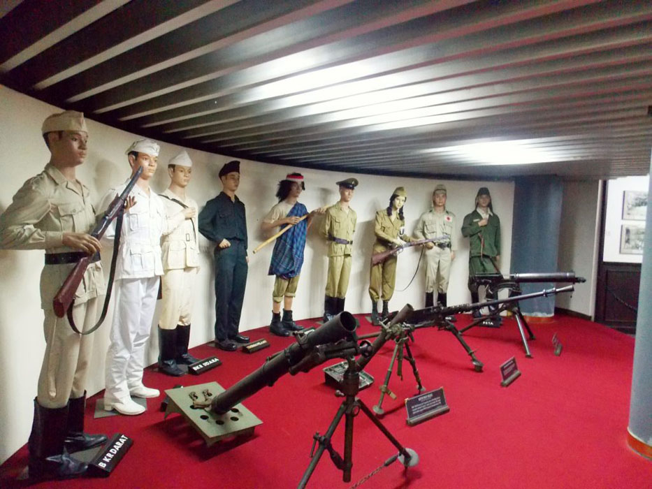

ABOUT MONJALI
 





Monumen Jogja Kembali adalah landmark sejarah di Yogyakarta, Indonesia, dibangun pada 1985 untuk menghormati perlawanan rakyat Yogyakarta terhadap agresi militer pada tahun 1948. Monumen ini menampilkan patung perunggu pria bersenjata dengan tulisan “Jogja Kembali” yang besar di belakangnya, mencerminkan semangat perjuangan dan keberanian. Selain sebagai simbol historis, tempat ini menjadi objek wisata yang menarik dengan keindahan arsitektur dan area hijau untuk beristrirahat, menarik banyak pengunjung baik lokal maupun mancanegara.